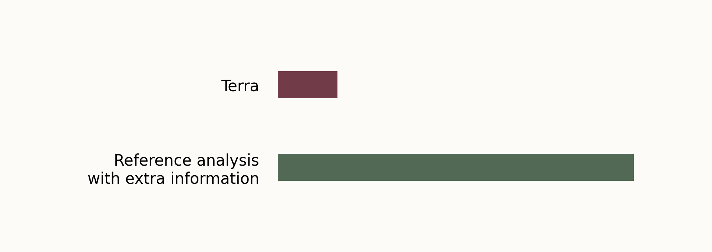
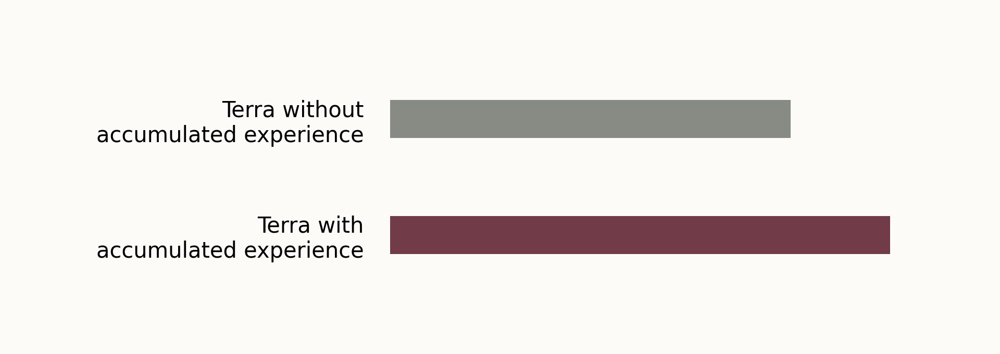

What should an agent learn from discovery?
I keep coming back to two questions. Can an agent work out something unfamiliar by choosing its own experiments? And when it encounters a new problem, does the earlier investigation make it a better learner?
OpenQFT grew out of wanting to study these questions together. A successful investigation is interesting in its own right. I am even more interested in what survives it: a useful idea, a better question, or a habit of checking an explanation before trusting it.
An intuition from the history of science
One inspiration is the history of particle physics. Observations arrived before a complete explanation. Researchers had to look for regularities, ask what those regularities implied, and decide which observation might change the picture. An explanation earned its value by helping them anticipate something they had not yet seen.
What interests me is this movement between evidence and explanation. Each discovery changes the questions that become worth asking. Experience can do more than supply another answer; it can change how the next investigation begins.
Collecting evidence is only part of the work
Choosing an experiment and making sense of its outcome are different abilities. An agent can collect observations while still missing a useful explanation. It can also settle on a plausible story too early and keep gathering evidence that fits it.
The Terra study motivates a closer look at this distinction. The comparison below places Terra alongside a diagnostic reference analysis. That reference also receives additional information, so the gap does not isolate a reasoning deficit. It is a prompt to ask which parts of an investigation need help, rather than a claim that every answer was already available to the agent.

When experience helps—and when it gets in the way
A later investigation need not begin from an empty page. In the selected Terra comparison below, accumulated experience is associated with better performance. That is encouraging: something from an earlier investigation can be useful again.
But useful memory needs judgement. A good explanation can guide a new experiment; an untested assumption can guide it in the wrong direction. I want to understand how an agent can carry forward what it has learnt while staying willing to revise it. The figure is a descriptive preview, not a claim that memory helps every investigation.

The question I want to keep asking
For me, the exciting possibility is an agent whose experience improves the way it investigates. It notices when an explanation stops working, asks a more revealing question, and brings a useful idea to an unfamiliar problem.
That connects scientific discovery to continual learning: progress in one investigation becomes part of how the next one is approached. OpenQFT is where I am exploring that connection.
A research note, while the work develops
This is an intuition-led preview of independent, unpublished research. The figures are simplified views of selected Terra results, each on its own relative scale. They are not intended for quantitative comparison across figures. The experimental setup and full paper will be shared when the work is ready.
Updated November 2026